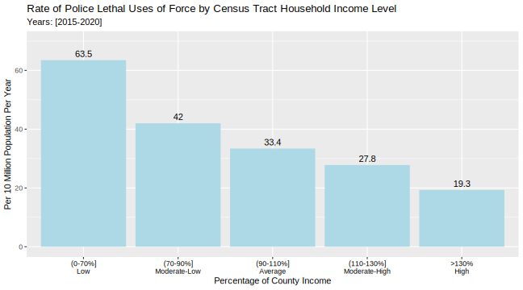
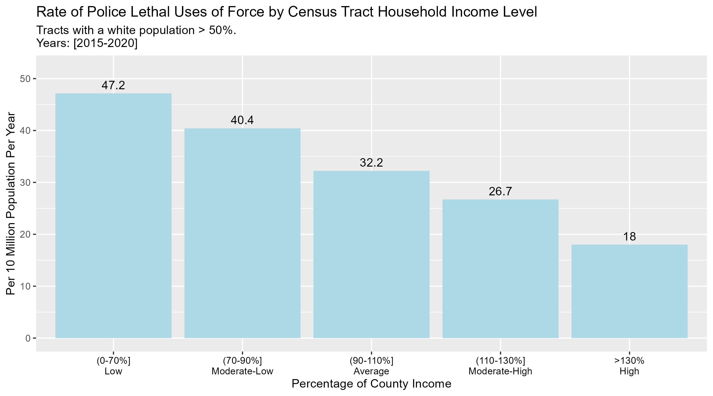
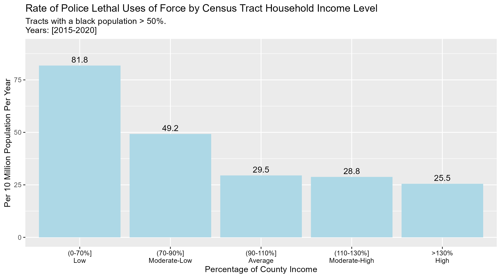
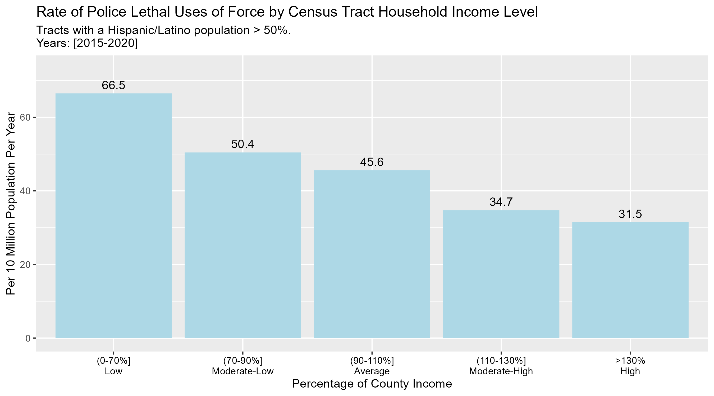
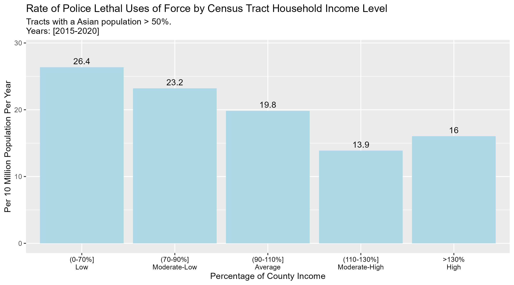
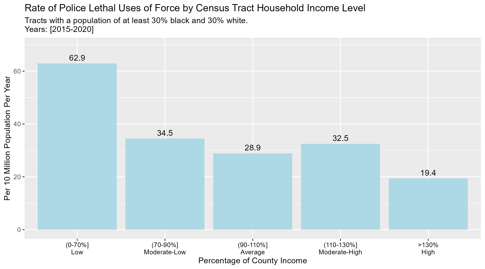
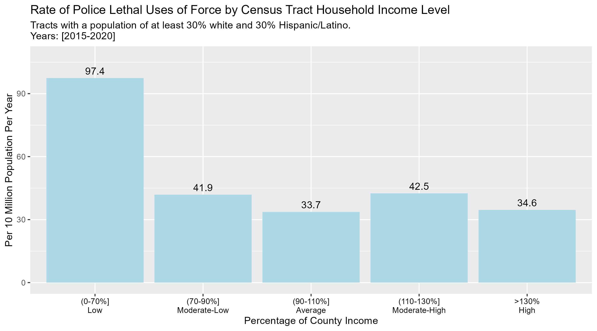
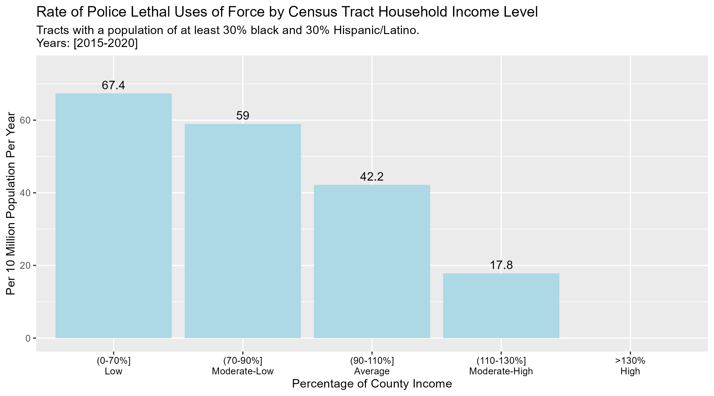

I’m working on a project analyzing various class indicators (or levels of deprivation/privilege, if you prefer) in census tracts1 where someone was killed by law enforcement.2
There is a longer history of the debate around whether or not police killings are a function of capitalist political economy and the managing of the “surplus population” or whether the phenomenon largely derives from discrimination against black Americans3. I may return to this in more detail in a future post, but for now I wanted to share the plots I have made for my honors thesis project. Hopefully someone will find them useful in helping us to better understand the phenomenon. Any feedback is appreciated.
The following plot shows the per 10 million rate of police killings in census tracts based on their median household income as a proportion of the county median household income in which they are situated. I used this measure rather than raw incomes to adjust for differences in what is considered low income and high income.4 This plot shows that the incidence of police killings varies quite a lot depending on tract income level. Low income tracts experience a rate nearly twice that of average income tracts, and high income tracts experience a rate less than one-third of low income tracts.

This plot is constructed the same as the one above, except that it is subset to only include tracts with a white population > 50%. The rates were similar to the overall plot above except for the low income plots.

Another plot subset to only include tracts with a black population > 50%. The rates for low income and moderate-low income were quite a bit higher than average or greater income. Average to high income tracts had roughly the same rate.

Latino/Hispanic-majority tracts.

In majority-Asian tracts the lowest income tracts also experienced the highest rate with higher income tracts experiencing lower rates except high income tracts had a rate greater than moderate-high tracts.

Next I looked at tracts in which there was no race or ethnic majority, but more than one race/ethnicity comprised > 30% of the population.
White-black tracts.

White-Hispanic/Latino

Black-Hispanic/Latino. (No police killings occurred in high income tracts.)

Footnotes
These are “small, relatively permanent statistical subdivisions of a county or statistically equivalent entity” that “generally have a population size between 1,200 and 8,000 people, with an optimum size of 4,000 people” (US Census Bureau).
↩︎I will refer to this phenomenon as “police killings” throughout the rest of the blog. This is not to be confused with law enforcement officers being killed.↩︎
Or both, but still the question hinges on to what extent racist discrimination can explain the phenomenon, and to what extent that explanation is inadequate.↩︎
For example, the median income in San Francisco County is much greater than other regions and thus what is considered “low income” and “high income” for that county is much greater than in other regions.↩︎